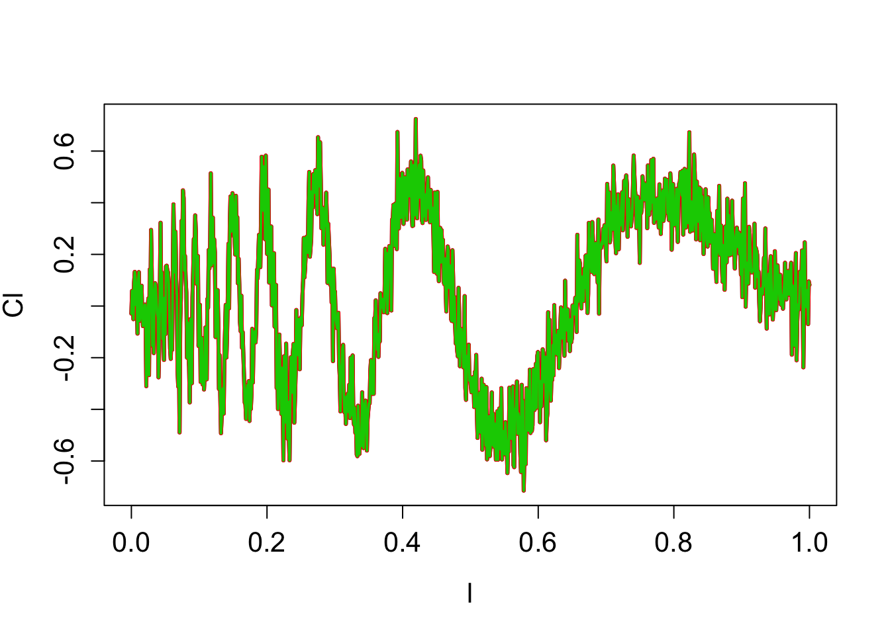
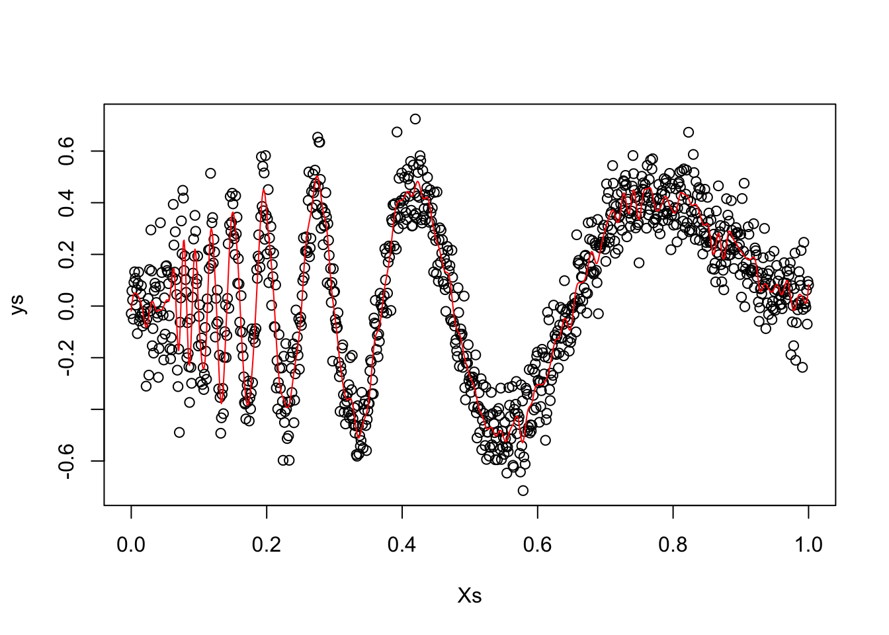
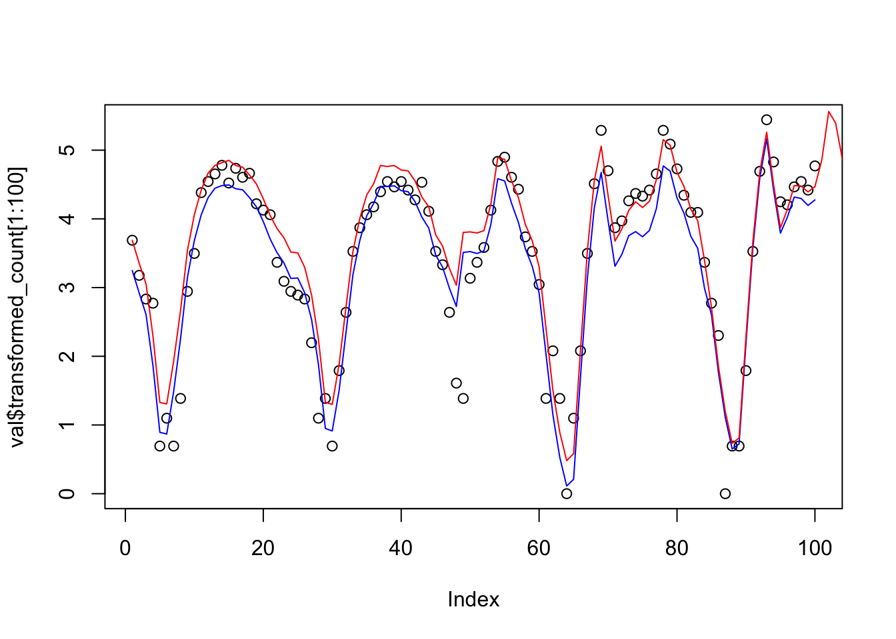
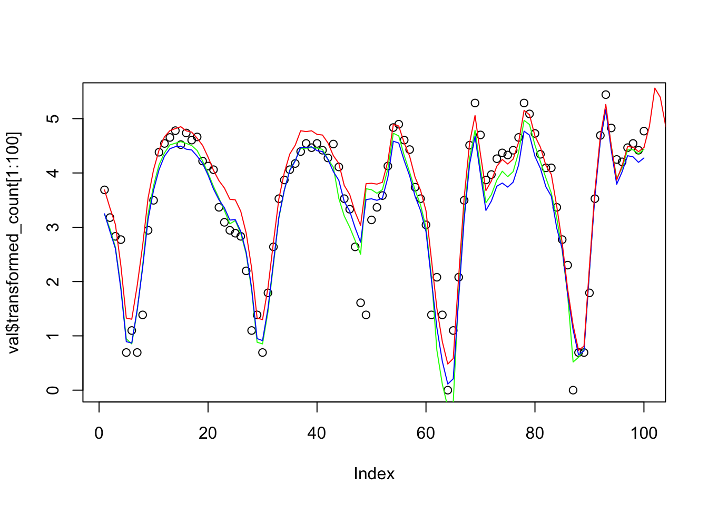

hw1
Zihao_Wang
10/7/2018
Last updated: 2018-10-18
workflowr checks: (Click a bullet for more information)-
✖ R Markdown file: uncommitted changes
The R Markdown file has unstaged changes. To know which version of the R Markdown file created these results, you’ll want to first commit it to the Git repo. If you’re still working on the analysis, you can ignore this warning. When you’re finished, you can runwflow_publishto commit the R Markdown file and build the HTML. -
✔ Environment: empty
Great job! The global environment was empty. Objects defined in the global environment can affect the analysis in your R Markdown file in unknown ways. For reproduciblity it’s best to always run the code in an empty environment.
-
✔ Seed:
set.seed(20181007)The command
set.seed(20181007)was run prior to running the code in the R Markdown file. Setting a seed ensures that any results that rely on randomness, e.g. subsampling or permutations, are reproducible. -
✔ Session information: recorded
Great job! Recording the operating system, R version, and package versions is critical for reproducibility.
-
Great! You are using Git for version control. Tracking code development and connecting the code version to the results is critical for reproducibility. The version displayed above was the version of the Git repository at the time these results were generated.✔ Repository version: 585b88f
Note that you need to be careful to ensure that all relevant files for the analysis have been committed to Git prior to generating the results (you can usewflow_publishorwflow_git_commit). workflowr only checks the R Markdown file, but you know if there are other scripts or data files that it depends on. Below is the status of the Git repository when the results were generated:
Note that any generated files, e.g. HTML, png, CSS, etc., are not included in this status report because it is ok for generated content to have uncommitted changes.Ignored files: Ignored: .DS_Store Untracked files: Untracked: analysis/Locfit_example.Rmd Untracked: code/hw1.Rmd Untracked: code/hw1.aux Untracked: code/hw1.fdb_latexmk Untracked: code/hw1.fls Untracked: code/hw1.log Untracked: code/hw1.out Untracked: code/hw1.tex Untracked: data/assn1-wangzh.txt Untracked: data/loocvs_hw1_p2 Untracked: data/loocvs_hw1_p2.rds Untracked: docs/figure/Locfit_example.Rmd/ Unstaged changes: Modified: analysis/hw1.Rmd
Expand here to see past versions:
rm(list=ls())
set.seed(12345)
options(warn = -1)
knitr::opts_knit$set(root.dir = '~/Desktop/stat374-fall-2018/analysis/')
library(kedd)
library(locfit)locfit 1.5-9.1 2013-03-22library(gridExtra)
library(reshape)
library(gam)Loading required package: splinesLoading required package: foreachLoaded gam 1.16library(tidyverse)── Attaching packages ─────────────────────────────────────────────────────────────────────────────────────────────────────────── tidyverse 1.2.1 ──✔ ggplot2 2.2.1 ✔ purrr 0.2.5
✔ tibble 1.4.2 ✔ dplyr 0.7.4
✔ tidyr 0.8.1 ✔ stringr 1.3.1
✔ readr 1.1.1 ✔ forcats 0.3.0── Conflicts ────────────────────────────────────────────────────────────────────────────────────────────────────────────── tidyverse_conflicts() ──
✖ purrr::accumulate() masks foreach::accumulate()
✖ dplyr::combine() masks gridExtra::combine()
✖ tidyr::expand() masks reshape::expand()
✖ dplyr::filter() masks stats::filter()
✖ dplyr::lag() masks stats::lag()
✖ dplyr::rename() masks reshape::rename()
✖ purrr::when() masks foreach::when()1. Computing and plotting with R
(a)
## function to compute empirical mean square error
mse <- function(n,sigma){
mysample = rnorm(n = n, sd = sigma, mean = 1)
return((mean(mysample)-1)^2)
}
emse <- function(n,sigma,B){
return(mean(replicate(B,mse(n,sigma))))
}
## simulate and plot
sigma = 1
B = 100
ns = seq(1,1000,5)
results = replicate(length(ns),0)
theory = replicate(length(ns),0)
for(i in 1:length(ns)){
results[i] = emse(ns[i],sigma,B)
theory[i] = sigma^2/ns[i]
}
plot(log(ns), log(results), xlab = "n", ylab = "mse")
lines(log(ns),log(theory), col = "red")Expand here to see past versions of unnamed-chunk-2-1.png:
| Version | Author | Date |
|---|---|---|
| 4f3ddee | zihao12 | 2018-10-08 |
Comment:
From the simulation experiments, we can see the results align with theoretical results
(b)
n = 1000
sigma = 1
B = 10000
## simulation
Z = replicate(B,sqrt(n)*(mean(rnorm(n,1,sigma)) - 1))
## theoretical standard normal
ns = seq(-10,10,0.01)
theory = replicate(length(ns),0)
for(i in 1:length(ns)){
theory[i] = 1/sqrt(2*pi) * exp(-ns[i]^2 *0.5)
}
plot(density(Z), col = "blue")
lines(ns,theory,col = "red")Expand here to see past versions of unnamed-chunk-3-1.png:
| Version | Author | Date |
|---|---|---|
| 4f3ddee | zihao12 | 2018-10-08 |
2 Leave-oue-out cross-validation
(a)
By definition, \(\hat{R}(h) = \frac{1}{n} * \sum_{i = 1}^{n} (r(x_{i})-\hat{r}_{-i}(x_{i}))^2\). Then we have \(r(x_{i}) - \hat{r}_{-i}(x_{i}) = Y_{i} - \frac{\sum_{k \neq i} L_{i,k} * Y_{k}}{1-L_{ii}} = \frac{Y_{i} - \hat{r}_{n}(x_{i})} {1-L _{ii}}\). Then our desired equation follows.
(b)
Note: I select bandwidth in two ways: coding the loocv(bandwidth) function myself, and using the gcv function in the package. The two results are quite different, so I show both of them.
See what the data looks like
Doppler <- function(x){
y = sqrt(x*(1-x)) * sin(2.1*pi/(x+0.05))
return(y)
}
N = 1000
sigma = 0.1
Xs = seq(0,1, length = N)
ys_true = Doppler(Xs)
ys = ys_true + rnorm(N,sd = sigma)
plot(Xs,ys)
lines(Xs,ys_true, col = "red")
Expand here to see past versions of unnamed-chunk-4-1.png:
| Version | Author | Date |
|---|---|---|
| 585b88f | zihao12 | 2018-10-16 |
Plot Cross-validation-score vs bandwidth
K <- function(x){
return(1/sqrt(2*pi) * exp(-x^2/2))
}
Rhat <- function(h,Xs){
### compute L (L_ij = l_j(x_i), rowSums(L) = 1,1...)
n = length(Xs)
X_matrix = replicate(n,Xs)
X_difference_scaled = (X_matrix - t(X_matrix))/h
X_difference_scaled_kernel = K(X_difference_scaled) ## X_ij = K((Xi-Xj)/h)
L = diag(1/rowSums(X_difference_scaled_kernel)) %*% X_difference_scaled_kernel
### Compute Lii
L_diag = diag(L)
### Compute ys_hat
ys_hat = L %*% ys
### Conmpute R_hat
R_hat = mean(((ys-ys_hat)/(1-L_diag))^2)
return(R_hat)
}hs = seq(0,0.05,0.001)
myloocvs <- readRDS("../data/loocvs_hw1_p2") ## I save the computed results as it will take some time
#myloocvs <- sapply(hs, function(h) Rhat(h,Xs))
plot(myloocvs)Expand here to see past versions of unnamed-chunk-6-1.png:
| Version | Author | Date |
|---|---|---|
| 585b88f | zihao12 | 2018-10-16 |
#saveRDS(myloocvs,"../data/loocvs_hw1_p2.rds")
## We can also find the best bandwidth using gcv function, as an approximate (however, it gives me quite different results)
# gcvs = gcvplot(ys~Xs, alpha = seq(0,0.5,0.01))
# plot(gcvs$alpha, gcvs$values)locfit using the optimal bandwidth
h_star = hs[which.min(myloocvs)]
#h_star = 0.02
locfitopt = locfit(ys~Xs,alpha = h_star) ## if the first the element is 0, it reports error! How does this affect estimation??
plot(Xs, ys)
lines(Xs,predict(locfitopt, newdata = Xs), type = "l",col = "red")Expand here to see past versions of unnamed-chunk-7-1.png:
| Version | Author | Date |
|---|---|---|
| 585b88f | zihao12 | 2018-10-16 |
#lines(xg, Doppler(xg), col = "blue")Comment:
This should be the optimal, but from the plot it seems to be undersmoothing a lot (especially compared with the results using gcv, which will be shown later)
compute and plot the confidence interval for r(x)
## Formula: rhat(x) +- Z_a/2 * sigmahat(x) * |l(x)|
## Assumption: homoscedasticity of variance
## Formula for sigamhat(x): sigmahat(x) = sum(residue^2) / (n - 2*nu - 2*nutilde), where nu = tr(L), nutilde = tr(L^t*T)
## they can be retrived in dp1, dp2 respectively
nu = locfitopt$dp[["df1"]]
nutilde = locfitopt$dp[["df2"]]
sigmahat_sqrt = sum(residuals(locfitopt)^2)/(N - 2*nu + nutilde)
diaghat = predict(locfitopt,where="data",what="infl") ## L_ii
normell = predict(locfitopt,where="data",what="vari") ## |l_i(x)|
critval = 1.96
xg = Xs
pred = predict(locfitopt, newdata = xg)
width = critval * sqrt(sigmahat_sqrt*normell)
upper = pred + width
lower = pred - width
## plot confidence band
plot(xg, pred,lwd=3, xlab="l",ylab="Cl",cex=3,cex.axis=1.3, cex.lab=1.3,type="l")
lines(xg, upper,col = 2, lwd = 3)
lines(xg, lower,col = 3, lwd = 2)
Expand here to see past versions of unnamed-chunk-8-1.png:
| Version | Author | Date |
|---|---|---|
| 585b88f | zihao12 | 2018-10-16 |
Select bandwidth using gcv function & Fit with optimal h
## use GCV to choose bandwidth
alphamat = matrix(0,ncol = 2, nrow = 100)
alphamat[,2] = seq(0,1, length = 100)
gcvs = gcvplot(ys~Xs,alpha = alphamat)
plot(gcvs$alpha[,2], gcvs$values)
Expand here to see past versions of unnamed-chunk-9-1.png:
| Version | Author | Date |
|---|---|---|
| 585b88f | zihao12 | 2018-10-16 |
optband2 = gcvs$alpha[which.min(gcvs$values),2]
locfitopt2 = locfit(ys~Xs,alpha= c(0,optband2))
plot(Xs, ys)
lines(Xs,predict(locfitopt2, newdata = Xs), type = "l",col = "red")
Expand here to see past versions of unnamed-chunk-9-2.png:
| Version | Author | Date |
|---|---|---|
| 585b88f | zihao12 | 2018-10-16 |
nu = locfitopt2$dp[["df1"]]
nutilde = locfitopt2$dp[["df2"]]
sigmahat_sqrt = sum(residuals(locfitopt2)^2)/(N - 2*nu + nutilde)
diaghat = predict(locfitopt2,where="data",what="infl") ## L_ii
normell = predict(locfitopt2,where="data",what="vari") ## |l_i(x)|
critval = 1.96
xg = Xs
pred = predict(locfitopt2, newdata = xg)
width = critval * sqrt(sigmahat_sqrt*normell)
upper = pred + width
lower = pred - width
## plot confidence band
plot(xg, pred,lwd=3, xlab="l",ylab="Cl",cex=3,cex.axis=1.3, cex.lab=1.3,type="l")
lines(xg, upper,col = 2, lwd = 3)
lines(xg, lower,col = 3, lwd = 2)Is In(x) the 95% CI for \(r(x)\)
No. In(x) is centered around \(E(\hat{r}(x))\), which is not \(r(x)\). This CI is computed by the fact that for a fixed x, \(\hat{r}(x)\) asympototically follows \(N(E(\hat{r}(x)), \hat{\sigma}(x))\). That correctness of the claim requires \(E(\hat{r}(x)) = r(x)\), which is apparently violated.
3. Kernel density estimate for Old Faithful Geyser
data("faithful")
attach(faithful)
library(kedd)
## Broad search
ucv_eruptions = h.ucv(eruptions)
plot(ucv_eruptions)
Expand here to see past versions of unnamed-chunk-10-1.png:
| Version | Author | Date |
|---|---|---|
| 585b88f | zihao12 | 2018-10-16 |
$kernel
[1] "gaussian"
$deriv.order
[1] 0
$seq.bws
[1] 0.06382504 0.07988984 0.09595465 0.11201945 0.12808426 0.14414906
[7] 0.16021387 0.17627867 0.19234348 0.20840828 0.22447309 0.24053789
[13] 0.25660269 0.27266750 0.28873230 0.30479711 0.32086191 0.33692672
[19] 0.35299152 0.36905633 0.38512113 0.40118594 0.41725074 0.43331555
[25] 0.44938035 0.46544516 0.48150996 0.49757477 0.51363957 0.52970438
[31] 0.54576918 0.56183399 0.57789879 0.59396360 0.61002840 0.62609321
[37] 0.64215801 0.65822282 0.67428762 0.69035243 0.70641723 0.72248204
[43] 0.73854684 0.75461165 0.77067645 0.78674126 0.80280606 0.81887087
[49] 0.83493567 0.85100048
$ucv
[1] -0.4232268 -0.4258325 -0.4268588 -0.4268189 -0.4259983 -0.4246085
[7] -0.4228091 -0.4207043 -0.4183518 -0.4157788 -0.4129965 -0.4100111
[13] -0.4068286 -0.4034573 -0.3999082 -0.3961946 -0.3923311 -0.3883332
[19] -0.3842161 -0.3799950 -0.3756846 -0.3712988 -0.3668511 -0.3623543
[25] -0.3578208 -0.3532625 -0.3486911 -0.3441178 -0.3395537 -0.3350094
[31] -0.3304954 -0.3260215 -0.3215974 -0.3172321 -0.3129343 -0.3087120
[37] -0.3045724 -0.3005222 -0.2965672 -0.2927126 -0.2889626 -0.2853210
[43] -0.2817903 -0.2783726 -0.2750693 -0.2718809 -0.2688074 -0.2658482
[49] -0.2630020 -0.2602672## fine search (locate a neighborhood of the best point from broad search)
ucv_eruptions = h.ucv(eruptions, lower = 0.7*ucv_eruptions$h, higher = 1.3*ucv_eruptions$h, tol = 0.0001)
## Broad search
ucv_waiting = h.ucv(waiting)
plot(ucv_waiting)$kernel
[1] "gaussian"
$deriv.order
[1] 0
$seq.bws
[1] 0.7602256 0.9515749 1.1429243 1.3342736 1.5256229 1.7169722
[7] 1.9083215 2.0996708 2.2910201 2.4823694 2.6737187 2.8650681
[13] 3.0564174 3.2477667 3.4391160 3.6304653 3.8218146 4.0131639
[19] 4.2045132 4.3958625 4.5872118 4.7785612 4.9699105 5.1612598
[25] 5.3526091 5.5439584 5.7353077 5.9266570 6.1180063 6.3093556
[31] 6.5007050 6.6920543 6.8834036 7.0747529 7.2661022 7.4574515
[37] 7.6488008 7.8401501 8.0314994 8.2228487 8.4141981 8.6055474
[43] 8.7968967 8.9882460 9.1795953 9.3709446 9.5622939 9.7536432
[49] 9.9449925 10.1363419
$ucv
[1] -0.02395152 -0.02440334 -0.02467032 -0.02482935 -0.02492616
[6] -0.02498823 -0.02503085 -0.02506151 -0.02508310 -0.02509613
[11] -0.02510007 -0.02509402 -0.02507721 -0.02504910 -0.02500946
[16] -0.02495830 -0.02489589 -0.02482263 -0.02473907 -0.02464581
[21] -0.02454353 -0.02443293 -0.02431474 -0.02418970 -0.02405855
[26] -0.02392202 -0.02378083 -0.02363570 -0.02348733 -0.02333637
[31] -0.02318346 -0.02302922 -0.02287421 -0.02271897 -0.02256400
[36] -0.02240976 -0.02225667 -0.02210509 -0.02195537 -0.02180779
[41] -0.02166261 -0.02152005 -0.02138029 -0.02124346 -0.02110968
[46] -0.02097903 -0.02085156 -0.02072730 -0.02060626 -0.02048841## fine search (locate a neighborhood of the best point from broad search)
ucv_waiting = h.ucv(waiting, lower = 0.8*ucv_waiting$h, higher = 1.2*ucv_waiting$h,tol = 0.0001)plot estimated density with optimum h
plot(density(eruptions, bw = ucv_eruptions$h))Expand here to see past versions of unnamed-chunk-11-1.png:
| Version | Author | Date |
|---|---|---|
| 585b88f | zihao12 | 2018-10-16 |
plot(density(waiting, bw = ucv_waiting$h))
4 Risk of a two-dimensional Kernel density estimate
Let \(K_h(x,y,X,Y) := \frac{1}{h^2} E(K(\frac{X-x}{h})K(\frac{Y-y}{h}))\)
By \(|\Pr(x,y) - p(x-uh,y-vh) < L(|uh|^\beta + |vh|^\beta|)\), we have \(\Pr(x-uh,y-uh) < \Pr(x,y) + Lh^\beta(|u|^\beta+|v|^\beta)\)
Thus: \[ E(\hat{\Pr(x,y)}) = \frac{1}{h^2} E(K_h(x,y,X,Y)) \\ = \frac{1}{h^2} \int K(\frac{X-x}{h}) K(\frac{Y-y}{h}) \Pr(X,Y)dXdY \\ = \int K(u) K(v) P(x-Uh, y-Vh)dUdV \\ (U := \frac{x-X}{h})\\ \le \int K(u) K(v) (P(x,y) + Lh^\beta(|u|^\beta+|v|^\beta))dUdV \\ = \Pr(x,y) + Lh^\beta \int K(u)K(v)(|u|^\beta+|v|^\beta)dUdV\\ = \Pr(x,y) + Lh^\beta M \\ (M := \int K(u)K(v)(|u|^\beta+|v|^\beta)dUdV) \] Thus we have \(bias(x,y) = E(\hat{P_n}(x,y)) - \Pr(x,y) <= MLh^\beta\)
Similarly, for variance, \[ Var(\hat{P_n}(x,y)) = \frac{1}{n} Var(K_h(x,y,X,Y))\\ \leq \frac{1}{n} E(K_h(x,y,X,Y)^2)\\ = \frac{1}{nh^4} \int K^2(\frac{X-x}{h}) K^2(\frac{Y-y}{h}) \Pr(X,Y)dXdY \\ = \frac{1}{nh^2} \int K^2(U) K^2(V) \Pr(x-Uh,y-Vh)dUdV \\ \leq \frac{1}{nh^2} (\int K^2(U) K^2(V)dUdV + Lh^\beta \int K^2(U)K^2(V) (|U|^\beta + |V|^\beta))dUdV)\\ \leq \frac{M_2}{nh^2} \Pr(x,y)\\ (M_2 := \frac{1}{nh^2} (\int K^2(U) K^2(V)dUdV) \]
Thus we have \(V(x,y) \leq \frac{M_2\Pr(x,y)}{nh^2}\)
It is also easy to check both \(M\) and \(M_2\) are not inifinity.
\[
Risk(x,y) = bias(x,y)^2 + V(x,y) \leq (MLh^\beta)^2 + \frac{M_2\Pr(x,y)}{nh^2} := H(h) \\
h^* = (\frac{M_2\Pr(x,y)}{ML^2}) = O((\frac{1}{n})^\frac{1}{2\beta+2})\\
H(h^*) = O(\frac{1}{n})^\frac{\beta}{\beta+1}
\] Thus set \(H(h^*) < \epsilon\), we have the rate of convergence as \(O(\epsilon ^ -\frac{\beta+1}{\beta})\)
5 Capital Bike Sharing
data = read.csv("../data/hw1/train.csv")
test = read.csv("../data/hw1/test.csv")
#fac_names = c("holiday","workingday","weather")
# fac_names = c("holiday","workingday","weather","season","year","hour")
fac_names = c("holiday","workingday","weather","season","year","hour")
for(i in 1:length(fac_names)){
name = fac_names[i]
data[[name]] = factor(data[[name]])
test[[name]] = factor(test[[name]])
}
data[["transformed_count"]] = log(data$count + 1)
## split train into train and validation
train = data[data$day < 16,]
val = data[data$day > 15,]
## define loss
RMSLE_log <- function(count_log,count_hat_log){
return(sqrt(mean((count_log-count_hat_log)^2)))
}#plot(density(train$count))
hist(train$count)
Expand here to see past versions of unnamed-chunk-13-1.png:
| Version | Author | Date |
|---|---|---|
| 585b88f | zihao12 | 2018-10-16 |
# p1 = ggplot(train,aes(atemp, count, color = weather)) +
# geom_point()
#
# p2 = ggplot(train,aes(humidity,count, color = weather)) +
# geom_point()
#
# p3 = ggplot(train,aes(windspeed,count, color = weather)) +
# geom_point()
p1 <- ggplot(subset(train,workingday==1),aes(hour,count)) +
geom_point()
p2 <- ggplot(subset(train,workingday==0),aes(hour,count)) +
geom_point()
grid.arrange(p1,p2,nrow = 2)
Expand here to see past versions of unnamed-chunk-14-1.png:
| Version | Author | Date |
|---|---|---|
| 585b88f | zihao12 | 2018-10-16 |
Comment:
The counts distribution with hours are different for workingday and nonworkingday. So there is a very strong connection between the interaction between hour and workingday! Other factors do not bring about too much difference
(a) linear model on count
linearMD <-lm(transformed_count~daylabel+workingday*hour + season +atemp+humidity+windspeed,data=train)
summary(linearMD)
Call:
lm(formula = transformed_count ~ daylabel + workingday * hour +
season + atemp + humidity + windspeed, data = train)
Residuals:
Min 1Q Median 3Q Max
-3.5205 -0.1618 0.0392 0.2168 2.3149
Coefficients:
Estimate Std. Error t value Pr(>|t|)
(Intercept) 3.564e+00 4.405e-02 80.918 < 2e-16 ***
daylabel 1.329e-03 2.321e-05 57.267 < 2e-16 ***
workingday1 -1.012e+00 4.447e-02 -22.763 < 2e-16 ***
hour1 -2.378e-01 5.199e-02 -4.573 4.87e-06 ***
hour2 -5.801e-01 5.199e-02 -11.157 < 2e-16 ***
hour3 -1.269e+00 5.200e-02 -24.409 < 2e-16 ***
hour4 -2.232e+00 5.202e-02 -42.911 < 2e-16 ***
hour5 -2.253e+00 5.203e-02 -43.299 < 2e-16 ***
hour6 -1.632e+00 5.204e-02 -31.362 < 2e-16 ***
hour7 -7.776e-01 5.202e-02 -14.949 < 2e-16 ***
hour8 8.747e-02 5.199e-02 1.682 0.092516 .
hour9 5.699e-01 5.200e-02 10.961 < 2e-16 ***
hour10 9.405e-01 5.205e-02 18.068 < 2e-16 ***
hour11 1.111e+00 5.214e-02 21.312 < 2e-16 ***
hour12 1.240e+00 5.226e-02 23.723 < 2e-16 ***
hour13 1.224e+00 5.237e-02 23.373 < 2e-16 ***
hour14 1.181e+00 5.245e-02 22.519 < 2e-16 ***
hour15 1.162e+00 5.244e-02 22.162 < 2e-16 ***
hour16 1.150e+00 5.241e-02 21.936 < 2e-16 ***
hour17 1.063e+00 5.232e-02 20.320 < 2e-16 ***
hour18 9.181e-01 5.223e-02 17.578 < 2e-16 ***
hour19 7.567e-01 5.212e-02 14.520 < 2e-16 ***
hour20 5.231e-01 5.206e-02 10.049 < 2e-16 ***
hour21 3.575e-01 5.202e-02 6.872 6.79e-12 ***
hour22 1.770e-01 5.201e-02 3.403 0.000669 ***
hour23 -1.187e-01 5.199e-02 -2.283 0.022460 *
season2 3.250e-01 1.599e-02 20.322 < 2e-16 ***
season3 1.757e-01 2.060e-02 8.529 < 2e-16 ***
season4 2.633e-01 1.458e-02 18.054 < 2e-16 ***
atemp 2.943e-02 8.909e-04 33.030 < 2e-16 ***
humidity -6.140e-03 2.610e-04 -23.525 < 2e-16 ***
windspeed -5.585e-03 5.538e-04 -10.084 < 2e-16 ***
workingday1:hour1 -5.475e-01 6.289e-02 -8.707 < 2e-16 ***
workingday1:hour2 -8.184e-01 6.289e-02 -13.013 < 2e-16 ***
workingday1:hour3 -5.404e-01 6.289e-02 -8.592 < 2e-16 ***
workingday1:hour4 5.249e-01 6.289e-02 8.346 < 2e-16 ***
workingday1:hour5 1.990e+00 6.289e-02 31.644 < 2e-16 ***
workingday1:hour6 2.818e+00 6.289e-02 44.811 < 2e-16 ***
workingday1:hour7 2.976e+00 6.289e-02 47.319 < 2e-16 ***
workingday1:hour8 2.624e+00 6.289e-02 41.721 < 2e-16 ***
workingday1:hour9 1.425e+00 6.289e-02 22.657 < 2e-16 ***
workingday1:hour10 3.780e-01 6.289e-02 6.010 1.93e-09 ***
workingday1:hour11 2.856e-01 6.289e-02 4.541 5.67e-06 ***
workingday1:hour12 3.707e-01 6.289e-02 5.894 3.91e-09 ***
workingday1:hour13 3.324e-01 6.290e-02 5.286 1.28e-07 ***
workingday1:hour14 2.560e-01 6.289e-02 4.071 4.72e-05 ***
workingday1:hour15 3.521e-01 6.290e-02 5.597 2.24e-08 ***
workingday1:hour16 7.617e-01 6.289e-02 12.111 < 2e-16 ***
workingday1:hour17 1.494e+00 6.289e-02 23.759 < 2e-16 ***
workingday1:hour18 1.589e+00 6.289e-02 25.274 < 2e-16 ***
workingday1:hour19 1.427e+00 6.289e-02 22.685 < 2e-16 ***
workingday1:hour20 1.342e+00 6.289e-02 21.331 < 2e-16 ***
workingday1:hour21 1.240e+00 6.290e-02 19.715 < 2e-16 ***
workingday1:hour22 1.154e+00 6.290e-02 18.350 < 2e-16 ***
workingday1:hour23 1.018e+00 6.289e-02 16.183 < 2e-16 ***
---
Signif. codes: 0 '***' 0.001 '**' 0.01 '*' 0.05 '.' 0.1 ' ' 1
Residual standard error: 0.3925 on 8585 degrees of freedom
Multiple R-squared: 0.9277, Adjusted R-squared: 0.9273
F-statistic: 2041 on 54 and 8585 DF, p-value: < 2.2e-16#plot(linearMD)# linearPredict = predict(linearMD, subset(val, colnames = c("atemp","humidity","windspeed","weather")))
linearPredict_train = predict(linearMD, train)
linearPredict_val = predict(linearMD, val)
print(paste0("training loss: ", RMSLE_log(linearPredict_train,train$transformed_count)))[1] "training loss: 0.391236649815652"print(paste0("validation loss: ", RMSLE_log(linearPredict_val,val$transformed_count)))[1] "validation loss: 0.399954614277405"plot(val$transformed_count[1:100])
lines(linearPredict_val,col = "blue")
Expand here to see past versions of unnamed-chunk-16-1.png:
| Version | Author | Date |
|---|---|---|
| 585b88f | zihao12 | 2018-10-16 |
Comment:
Our model for linear regression is: \(Y = X*\beta + \epsilon\). The normality assumption holds, but the residue seems not to be independent of X. Also, the R-squared is only around 25%, meaning our model does not account for much variance in data. p-value suggests that we should reject the null hypothesis that the selected variables are not correlated with counts.
(b)
First, summarize the data by mean hourly counts
varnames = dimnames(train)[[2]]
ids = varnames[varnames != "transformed_count"]
## melt data
val_mlt = melt(val,id = ids)
train_mlt = melt(train,id = ids)
train_mlt$value = as.numeric(train_mlt$value)
train_hourmean = cast(train_mlt,daylabel~variable,mean)
attach(train_hourmean)
plot(daylabel,transformed_count)
Expand here to see past versions of unnamed-chunk-17-1.png:
| Version | Author | Date |
|---|---|---|
| 585b88f | zihao12 | 2018-10-16 |
attach(train_hourmean)The following objects are masked from train_hourmean (pos = 3):
daylabel, transformed_countlocfitmodel_hourmean_train = locfit(transformed_count~daylabel)
predict_hourmean_train = predict(locfitmodel_hourmean_train,daylabel)
plot(daylabel,predict_hourmean_train)Expand here to see past versions of unnamed-chunk-18-1.png:
| Version | Author | Date |
|---|---|---|
| 585b88f | zihao12 | 2018-10-16 |
train_hourmean_trend = train_hourmean
train_hourmean_trend$transformed_count = predict_hourmean_train
train_hourmean_residue = train_hourmean
train_hourmean_residue$transformed_count = residuals(locfitmodel_hourmean_train)
detach(train_hourmean)u_daylabels = unique(train_mlt$daylabel)
## get residue as new response
train_residue = train
for(i in 1:length(u_daylabels)){
train_residue[train_residue$daylabel == u_daylabels[i],"transformed_count"] = train_residue[train_residue$daylabel == u_daylabels[i],"transformed_count"] - train_hourmean_trend[train_hourmean_trend$daylabel == u_daylabels[i],"transformed_count"]
}
# SmoothedLinearMD = lm(transformed_count ~ hour+workingday+weather+atemp+humidity+windspeed, data = train_residue)
SmoothedLinearMD = lm(transformed_count ~ workingday*hour + season +atemp+humidity+windspeed, data = train_residue)
## training loss
LlrLm_train = predict(SmoothedLinearMD,train) + predict(locfitmodel_hourmean_train, train$daylabel)
print(paste0("training loss: ",RMSLE_log(LlrLm_train, train$transformed_count)))[1] "training loss: 0.388239681587841"## validation loss
LlrLm_val = predict(SmoothedLinearMD,val) + predict(locfitmodel_hourmean_train, val$daylabel)
print(paste0("validation loss: ",RMSLE_log(LlrLm_val, val$transformed_count)))[1] "validation loss: 0.381584966746676"## show how the fit goes
plot(val$transformed_count[1:100])
lines(LlrLm_val[1:100], col = "blue")
lines(linearPredict_val,col = "red")
Expand here to see past versions of unnamed-chunk-19-1.png:
| Version | Author | Date |
|---|---|---|
| 585b88f | zihao12 | 2018-10-16 |
(c) Using additive model
gamMD <- gam(transformed_count ~ daylabel+workingday*hour+atemp*season + humidity+workingday+holiday*weather, data = train_residue)
#gamMD <- gam(transformed_count ~ daylabel+workingday+hour+workingday*hour + season +atemp+humidity+windspeed, data = train_residue)
## training loss
GamLm_train = predict(gamMD,train) + predict(locfitmodel_hourmean_train, train$daylabel)
print(paste0("training loss: ",RMSLE_log(GamLm_train, train$transformed_count)))[1] "training loss: 0.360566240953876"## validation loss
GamLm_val = predict(gamMD,val) + predict(locfitmodel_hourmean_train, val$daylabel)
print(paste0("validation loss: ",RMSLE_log(GamLm_val, val$transformed_count)))[1] "validation loss: 0.35068072795119"## show how the fit goes
plot(val$transformed_count[1:100])
lines(GamLm_val[1:100], col = "green")
lines(LlrLm_val[1:100], col = "blue")
lines(linearPredict_val,col = "red")
Expand here to see past versions of unnamed-chunk-20-1.png:
| Version | Author | Date |
|---|---|---|
| 585b88f | zihao12 | 2018-10-16 |
Comment:
I got the best prediction from part (c). Though gam can lift my the model performance a little, feature selection is perhaps more important. Before adding the interaction term for workingday*hour, my best loss is around 1, much worse than the simplist linear model used here.
## prediction on test
GamLm_test = predict(gamMD,test) + predict(locfitmodel_hourmean_train, test$daylabel)
GamLm_test = exp(GamLm_test) - 1
write.table(as.numeric(GamLm_test), "../data/assn1-wangzh.txt", row.names = FALSE, col.names=FALSE, sep = "\n")Session information
sessionInfo()R version 3.4.3 (2017-11-30)
Platform: x86_64-apple-darwin15.6.0 (64-bit)
Running under: macOS High Sierra 10.13
Matrix products: default
BLAS: /Library/Frameworks/R.framework/Versions/3.4/Resources/lib/libRblas.0.dylib
LAPACK: /Library/Frameworks/R.framework/Versions/3.4/Resources/lib/libRlapack.dylib
locale:
[1] en_US.UTF-8/en_US.UTF-8/en_US.UTF-8/C/en_US.UTF-8/en_US.UTF-8
attached base packages:
[1] splines stats graphics grDevices utils datasets methods
[8] base
other attached packages:
[1] forcats_0.3.0 stringr_1.3.1 dplyr_0.7.4 purrr_0.2.5
[5] readr_1.1.1 tidyr_0.8.1 tibble_1.4.2 ggplot2_2.2.1
[9] tidyverse_1.2.1 gam_1.16 foreach_1.4.4 reshape_0.8.7
[13] gridExtra_2.3 locfit_1.5-9.1 kedd_1.0.3
loaded via a namespace (and not attached):
[1] Rcpp_0.12.16 lubridate_1.7.4 lattice_0.20-35
[4] assertthat_0.2.0 rprojroot_1.3-2 digest_0.6.15
[7] psych_1.8.4 R6_2.2.2 cellranger_1.1.0
[10] plyr_1.8.4 backports_1.1.2 evaluate_0.10.1
[13] httr_1.3.1 pillar_1.2.2 rlang_0.2.0
[16] lazyeval_0.2.1 readxl_1.1.0 rstudioapi_0.7
[19] whisker_0.3-2 R.utils_2.6.0 R.oo_1.22.0
[22] rmarkdown_1.9 labeling_0.3 foreign_0.8-70
[25] munsell_0.4.3 broom_0.4.4 compiler_3.4.3
[28] modelr_0.1.2 pkgconfig_2.0.1 mnormt_1.5-5
[31] htmltools_0.3.6 workflowr_1.0.1 codetools_0.2-15
[34] crayon_1.3.4 R.methodsS3_1.7.1 grid_3.4.3
[37] nlme_3.1-137 jsonlite_1.5 gtable_0.2.0
[40] git2r_0.21.0 magrittr_1.5 scales_0.5.0
[43] cli_1.0.0 stringi_1.2.2 reshape2_1.4.3
[46] bindrcpp_0.2.2 xml2_1.2.0 iterators_1.0.9
[49] tools_3.4.3 glue_1.2.0 hms_0.4.2
[52] parallel_3.4.3 yaml_2.1.19 colorspace_1.3-2
[55] rvest_0.3.2 knitr_1.20 bindr_0.1.1
[58] haven_1.1.1 This reproducible R Markdown analysis was created with workflowr 1.0.1
Comment:
When B is too small (say, only 100), density(B) does not give very good estimate. When B is big enough, density estimation is quite good.